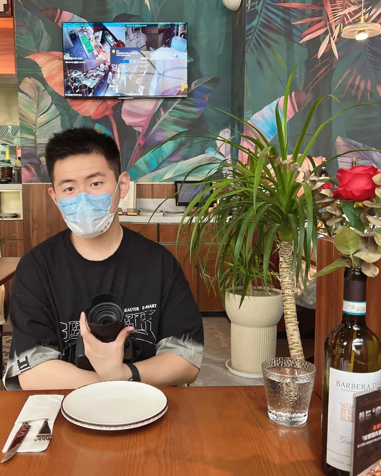

聊聊吧。Let's talk.
我的三面。Three sides of me.

内容创作Content Creation
把复杂的事讲清楚，是我最熟的手艺。服务新东方、高途等客户时，日均 7–13 条小红书笔记，累计 200+ 条——选题、封面、文案、混剪，一个人跑完整条流水线。Making complicated things clear is what I do best. For clients like Koolearn and Gaotu I produced 7–13 Xiaohongshu posts a day, 200+ in total — topic, cover, copy, edit, all by myself.
影像创作Filmmaking
从进博会到亚布力，从 Livehouse 到校园晚会，扛着 A7M4 和稳定器拍过 5+ 场大会、10+ 场演出。也在剪辑台前把素材变成 1200 万次播放。From the Import Expo to Yabuli, from live houses to campus galas — I have shot 5+ conferences and 10+ shows with an A7M4 and a gimbal, and turned that footage into 12 million views.
AI 应用AI Product
用 Codex / WorkBuddy 把想法直接做成能跑的界面：桩正（MediaPipe 姿态识别私教）、借星（Three.js 园林漫游）、TruthPass（链上溯源）。不做 demo，做能交付的东西。I use Codex and WorkBuddy to turn ideas into working interfaces: Zhuang Zheng (MediaPipe posture coach), Borrowing Stars (Three.js garden walkthrough), TruthPass (on-chain traceability). Not demos — deliverables.